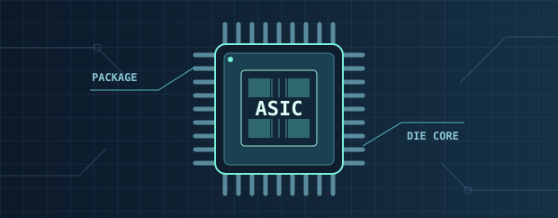

2026.09–11 / Verilog RTL 與合成報告
BloodMNIST 卷積加速器
以 Verilog 實作 8 類血球影像分類的卷積、池化與全連接運算。更新版保留片上 SRAM 排程與 80 個乘法器，調整 phase_neg 的重置方式，另提供 160 個乘法器的全正緣相容版。
20,172.475 FPS原始 8 張圖，100 MHz RTL 模擬
40 / 40低面積修正版的端到端測試
226,560其中 32 張圖的逐層數值比對
收錄六項數位硬體專題，涵蓋 CNN 加速器、RISC-V 邊緣辨識、FFT、AES、16 位元處理器及 ResNet 影像去噪。各項成果標明驗證環境與進度，方便對照設計取捨。

以 Verilog 實作 8 類血球影像分類的卷積、池化與全連接運算。更新版保留片上 SRAM 排程與 80 個乘法器，調整 phase_neg 的重置方式，另提供 160 個乘法器的全正緣相容版。
在 Arty A7 上實作兩階段人臉辨識，並整合 8 路平行 INT8 MAC 加速卷積與全連接運算。期末簡報記錄單、雙核心的軟體推論，以及軟體與硬體加速的另一組對照。
兩組數字來自期末簡報各自的對照條件。硬體加速組的辨識階段由 4,339.8 ms 縮短至 1,224.8 ms（約 3.54×）。
兩個頂層版本使用相同的串列輸入輸出與位元反轉流程。FFT_TOP_pipeline 將蝶形運算切成四級管線，增加中間暫存器並縮短蝶形單元的關鍵路徑。
| 指標 | FFT_TOP | FFT_TOP_pipeline |
|---|---|---|
| 最高時脈（ZCU106） | 84.2 MHz | 87.64 MHz |
| LUT | 4,874（2.12%） | 6,638（2.88%） |
| FF | 7,272（1.58%） | 10,953（2.38%） |
| DSP | 64（3.70%） | 64（3.70%） |
| I/O | 29（8.06%） | 29（8.06%） |
| 晶片總功耗估計 | 0.675 W | 0.667 W |
| 合成時脈 | 100 MHz | 100 MHz |
| 總元件數（cells） | 48,219 | 63,798 |
| 元件總面積（Total cell area） | 1,419,481.337762 | 1,697,172.540482 |
| 合成總功耗 | 37.7518 mW | 55.2290 mW |
在 Xilinx ISE 整合 33 個模組。控制器以 FETCH、EXEC、STORE、HALT 四個狀態安排取指、運算與寫入。資料路徑配置八個 16 位元通用暫存器與 256 字的指令及資料共用記憶體。PC 以獨立加法器處理取指與相對分支。用最大最小值、六數相加、記憶體搬移、平方根與插入排序五個程式驗證完整處理器。
完整系統佈局繞線後，靜態時序報表列出的最小週期為 18.726 ns。
針對 Galois Field 與矩陣運算導入平行化及管線化。已進行功能與 UVM 驗證，採用 TSMC 180 nm 流程進行合成與 APR，預計 2027 年 2 月下線。Notion 收錄 RTL 模擬、功能覆蓋率、PreSim 與實體設計紀錄。
設計 Residual Buffer，讓中間殘差資料留在片上以減少 DRAM 往返，並評估緩衝區之間的平行處理。